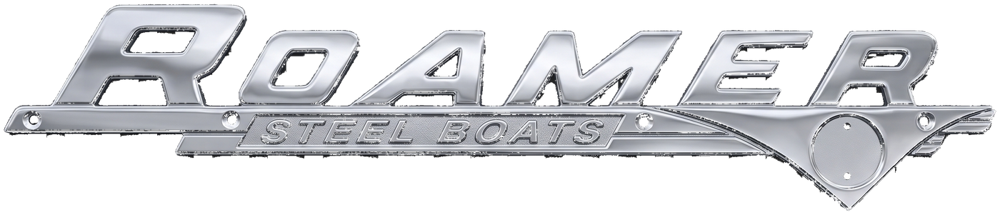
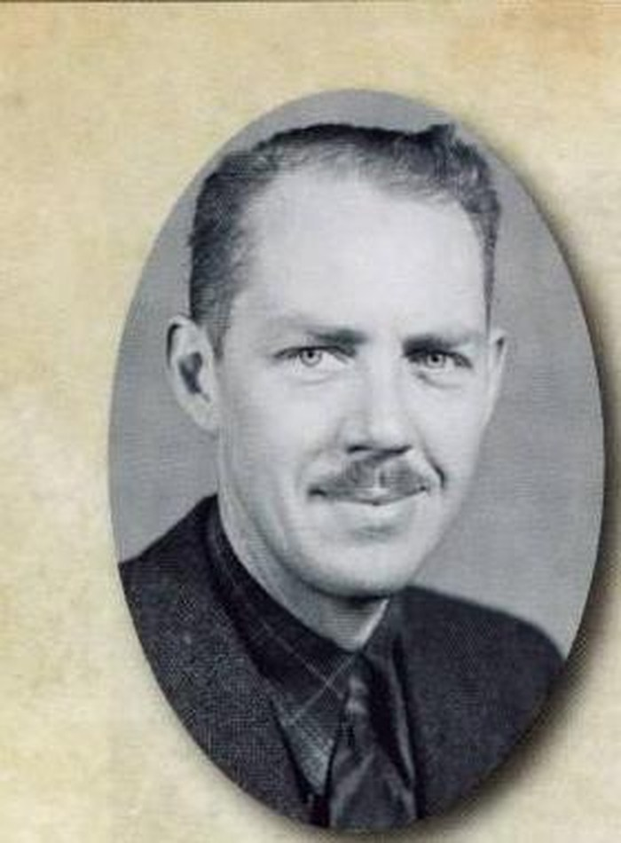
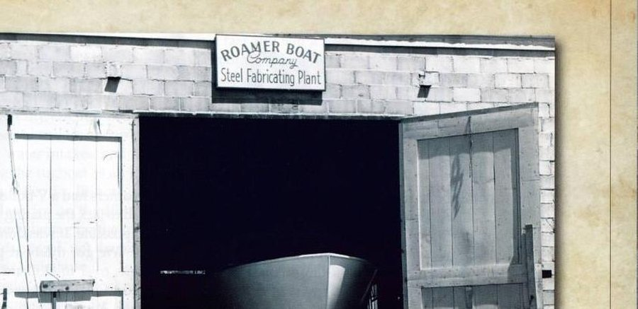
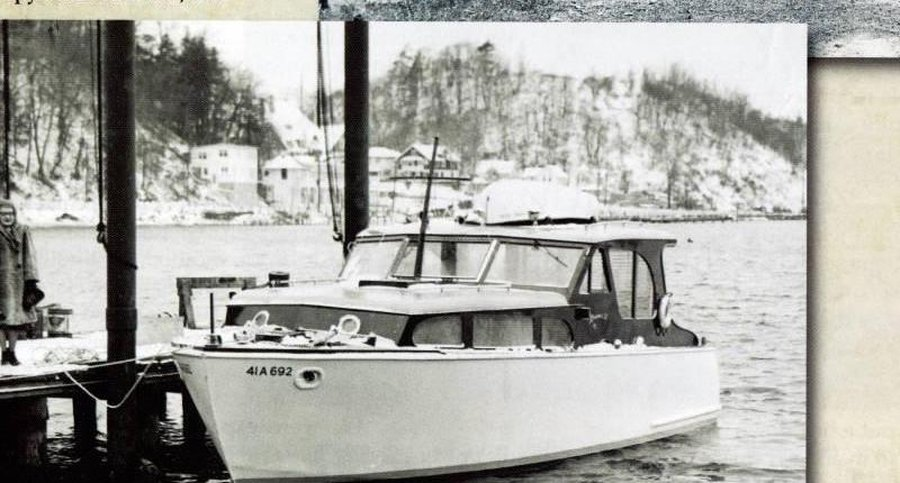
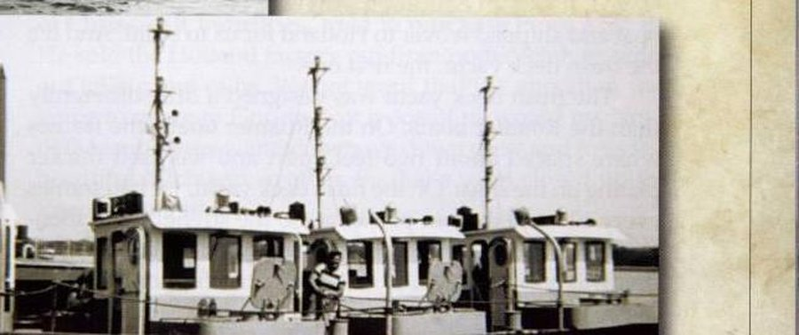

The welded-steel cruisers built by Robert R. Linn on the Holland waterfront — nine years of Roamer, before the company became part of Chris-Craft.

Robert Linn came to Holland from Grand Rapids as a young man with his wife, Frances, and spent two years apprenticing with Ken Campbell at the Campbell Boat Company. The couple and their two sons, Robert Jr. and David, settled at 1024 South Shore Drive, close enough to the Campbell yard to watch it every day.
In 1946, working out of the Campbell Boat Company facility, Linn built his first Roamer: an all-welded, steel-hulled 32-foot express cruiser. By the fall of 1947 he had produced another steel 30-footer — the boat the family christened Roamer, and the boat that gave the company its name.
Linn's pitch was simple and true to his trade: steel, not wood. Copper-alloy steel, 1/8 inch on the hull sides and 3/16 inch on the bottom, meant an easy-care boat that wouldn't rot, warp, or corrode — carefree confidence, as the brochures put it, in doubtful waters.
Robert Linn builds his first all-welded, steel-hulled 32-foot express cruiser at the Campbell Boat Company site, where he had apprenticed.
A new steel 30-footer, fitted with a mahogany wood cabin, is christened Roamer by Frances Linn — the family boat that names the company.
Linn builds a 36-foot patrol boat for the City of Chicago's drainage canal and issues Roamer's first brochure. By 1950, a factory at 961 Washington Avenue is turning out cabin cruisers, express and deckhouse cruisers, and double-cabin models from 32 to 48 feet — plus passenger boats for outfitters as far away as Ely, Minnesota.
The Navy contracts Roamer to build ten John Alden–designed, 45-foot diesel steel tugs for the Army Transportation Corps — a contract worth over half a million dollars.
A second Navy contract adds twenty-one more tugs and funds a new warehouse in Park Township, near the Big Bayou. The last three tugs steam south in September 1954, closing out a project that had employed 120 people.
In March, Robert Linn sells the Roamer Boat Company to Chris-Craft for $117,000. Linn and his sons go on to run Bay Haven Marine at 1862 Ottawa Beach Road for many years.
Chris-Craft continues the welded-steel line as its Roamer Division, adding an aluminum boat in 1962 and eventually moving production to Florida in 1975. Steel-hull production ends for good in 1979.



Every hull left the plant welded, not riveted or planked — steel from the waterline up, in an era when nearly everyone else on the lake was still building in wood. Roamer's naval architect, A.M. Deering of Chicago, drew most of the pleasure-boat lines; the yard itself handled everything from work boats to Navy tugs.
The line ran from a bare-hull "handy man's special" all the way to a finished 48-foot cruiser — and it competed directly with Safti-Craft, Steel Craft, and Higgins for a buyer who wanted a boat that could take a hard landing.
Robert Linn's sons, Robert Jr. and David, grew up a few doors down from the Campbell yard and spent their working lives around boats at Bay Haven Marina in Holland after the sale to Chris-Craft.
The Linn Family · Holland, Michigan